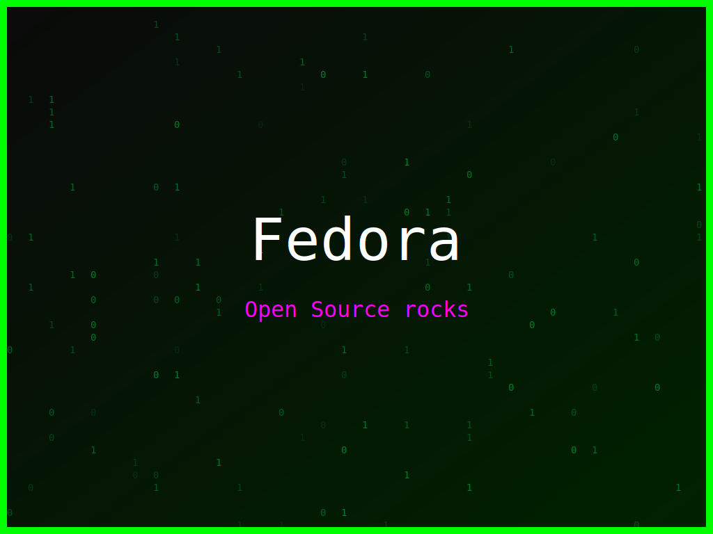

<section class="post-content">


<body>
    <div class="details-container">
        
        <ul class="details-list">
            <li><strong>Autor:</strong> piolinux</li>
            <li><strong>Descrição:</strong> Arte digital com o tema Fedora, inspirada na estética de matrix e em tons coloridos</li>
            <li><strong>Distro:</strong> Fedora</li>
            <li><strong>Frases:</strong> Open Source rocks</li>
            <li><strong>Tags:</strong> matrix, colorido</li>
        </ul>
        <a href="../galeria.html">Voltar para a galeria</a>||
        <a href="../wallpaper2.svg" download="wallpaper-matrix-fedora-codigo-em-tons-vivos.svg">Baixar Wallpaper</a>
    </div>
</section>

